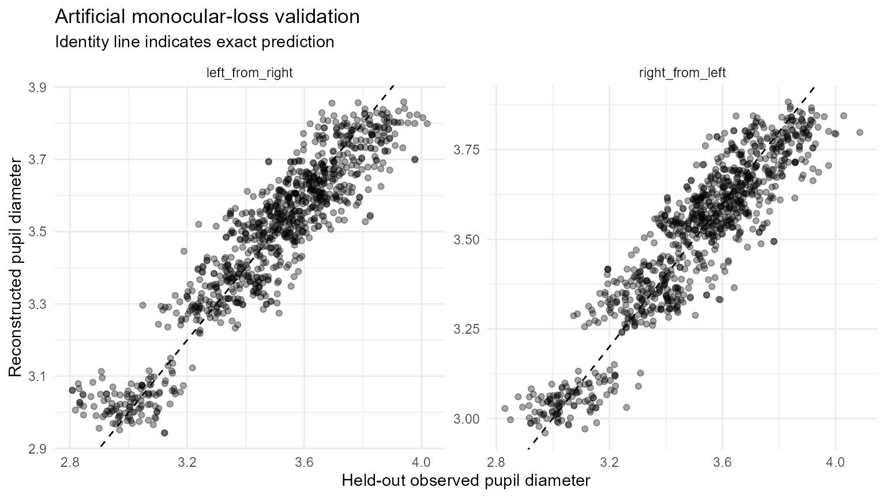
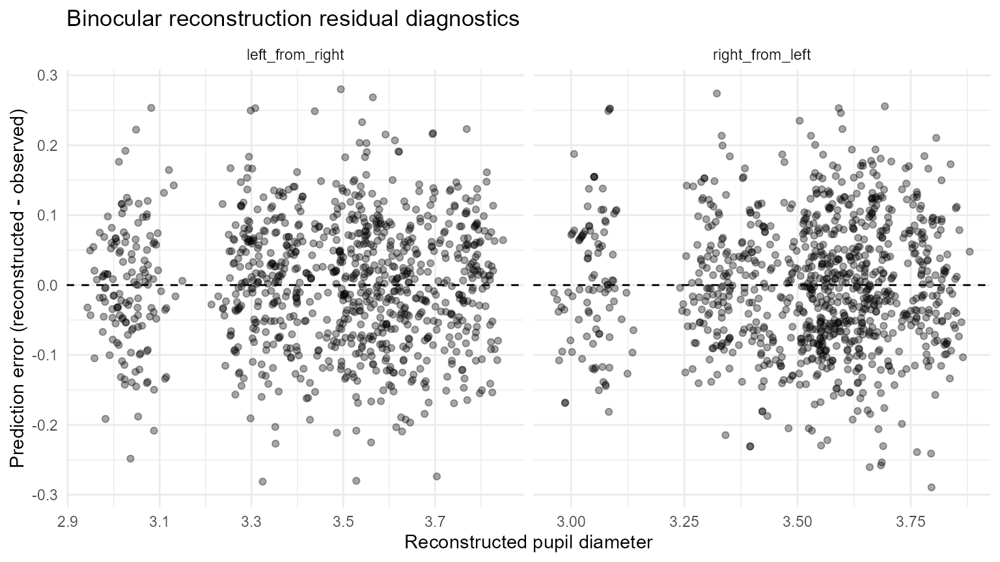

Validating Pupil Reconstruction with Artificial Monocular Loss
Source:vignettes/articles/validating-binocular-reconstruction.Rmd
validating-binocular-reconstruction.RmdPurpose
Cross-eye pupil reconstruction has a useful property that ordinary missing-data problems often lack: bilateral samples provide observable targets that can be hidden deliberately. This article uses that fact to test a reconstruction policy before it is applied to naturally missing eye measurements.
Artificial monocular loss does not prove that naturally missing values behave in the same way. It does, however, directly answer a narrower and important question: when one eye is known, how accurately does the declared calibration reconstruct the other eye in this dataset?
Build a deterministic synthetic benchmark
dat <- simulate_gazepoint_pupil_data(
n_subjects = 8,
n_trials = 4,
n_time_bins = 120,
blink_probability = 0.01,
seed = 4102
)
# Give the right eye a reproducible affine offset.
dat$pupil_right <- 0.06 + 0.985 * dat$pupil_rightRandom held-out samples
Random masking tests local prediction when individual bilateral observations are hidden.
random_validation <- validate_gazepoint_binocular_reconstruction(
dat,
left_col = "pupil_left",
right_col = "pupil_right",
time_col = "timestamp_ms",
group_cols = "subject",
gap_group_cols = c("subject", "trial"),
mask_prop = 0.10,
mask_mode = "random",
repeats = 5,
seed = 2026,
min_pairs = 80
)
random_validation$summary
#> # A tibble: 2 × 11
#> direction repeats total_requested total_predicted prediction_rate rmse
#> <chr> <int> <int> <int> <dbl> <dbl>
#> 1 left_from_right 5 951 949 0.998 0.0926
#> 2 right_from_left 5 969 965 0.996 0.0957
#> # ℹ 5 more variables: mae <dbl>, bias <dbl>, median_error <dbl>,
#> # error_mad <dbl>, correlation <dbl>
plot_gazepoint_binocular_diagnostics(random_validation, "validation")
#> Warning: Removed 6 rows containing missing values or values outside the scale range
#> (`geom_point()`).
Contiguous held-out runs
Natural eye loss is often temporally clustered. Contiguous masking therefore asks a more demanding question than hiding independent samples.
contiguous_validation <- validate_gazepoint_binocular_reconstruction(
dat,
left_col = "pupil_left",
right_col = "pupil_right",
time_col = "timestamp_ms",
group_cols = "subject",
gap_group_cols = c("subject", "trial"),
mask_prop = 0.10,
mask_mode = "contiguous",
block_size = 8,
repeats = 5,
seed = 2027,
min_pairs = 80
)
contiguous_validation$summary
#> # A tibble: 2 × 11
#> direction repeats total_requested total_predicted prediction_rate rmse
#> <chr> <int> <int> <int> <dbl> <dbl>
#> 1 left_from_right 5 948 946 0.998 0.0887
#> 2 right_from_left 5 972 969 0.997 0.0916
#> # ℹ 5 more variables: mae <dbl>, bias <dbl>, median_error <dbl>,
#> # error_mad <dbl>, correlation <dbl>The row-level prediction table retains direction, model ID, calibration level, gap duration, extrapolation status, and reconstruction outcome.
head(contiguous_validation$predictions)
#> # A tibble: 6 × 14
#> repeat_id row_id direction observed predicted error status model_id
#> <int> <int> <chr> <dbl> <dbl> <dbl> <chr> <chr>
#> 1 1 71 left_from_right 3.58 3.63 0.0482 left_rec… binoc_0…
#> 2 1 72 left_from_right 3.70 3.68 -0.0240 left_rec… binoc_0…
#> 3 1 73 left_from_right 3.70 3.68 -0.0214 left_rec… binoc_0…
#> 4 1 74 left_from_right 3.67 3.63 -0.0414 left_rec… binoc_0…
#> 5 1 75 left_from_right 3.71 3.67 -0.0387 left_rec… binoc_0…
#> 6 1 76 left_from_right 3.64 3.67 0.0294 left_rec… binoc_0…
#> # ℹ 6 more variables: calibration_level <chr>, r_squared <dbl>,
#> # extrapolated <lgl>, gap_ms <dbl>, subject <chr>, timestamp_ms <dbl>
plot_gazepoint_binocular_diagnostics(contiguous_validation, "residuals")
#> Warning: Removed 5 rows containing missing values or values outside the scale range
#> (`geom_point()`).
Stress-test increasing monocular loss
A single masking percentage can conceal a deterioration in calibration support. The stress-test helper repeats validation across a declared range of missingness.
stress <- stress_test_gazepoint_binocular_reconstruction(
dat,
left_col = "pupil_left",
right_col = "pupil_right",
time_col = "timestamp_ms",
group_cols = "subject",
gap_group_cols = c("subject", "trial"),
missingness = c(0.05, 0.10, 0.20, 0.30),
mask_modes = c("random", "contiguous"),
block_size = 8,
repeats = 3,
seed = 2028,
min_pairs = 80
)
stress$results
#> # A tibble: 16 × 13
#> mask_mode missingness direction repeats total_requested total_predicted
#> <chr> <dbl> <chr> <int> <int> <int>
#> 1 random 0.05 left_from_rig… 3 310 309
#> 2 random 0.05 right_from_le… 3 266 265
#> 3 random 0.1 left_from_rig… 3 567 565
#> 4 random 0.1 right_from_le… 3 585 584
#> 5 random 0.2 left_from_rig… 3 1141 1134
#> 6 random 0.2 right_from_le… 3 1151 1146
#> 7 random 0.3 left_from_rig… 3 1696 1686
#> 8 random 0.3 right_from_le… 3 1727 1710
#> 9 contiguous 0.05 left_from_rig… 3 294 293
#> 10 contiguous 0.05 right_from_le… 3 282 282
#> 11 contiguous 0.1 left_from_rig… 3 560 558
#> 12 contiguous 0.1 right_from_le… 3 592 588
#> 13 contiguous 0.2 left_from_rig… 3 1222 1218
#> 14 contiguous 0.2 right_from_le… 3 1070 1066
#> 15 contiguous 0.3 left_from_rig… 3 1713 1705
#> 16 contiguous 0.3 right_from_le… 3 1710 1699
#> # ℹ 7 more variables: prediction_rate <dbl>, rmse <dbl>, mae <dbl>, bias <dbl>,
#> # median_error <dbl>, error_mad <dbl>, correlation <dbl>Useful quantities include both error and prediction rate. A low RMSE among the few rows that remain eligible is not enough if the declared gates prevent reconstruction of most requested samples.
Evaluate a gap-duration policy directly
The cross-eye model uses the contralateral eye at the same time point, so a gap-duration restriction is a governance choice rather than a mathematical requirement of linear regression. If a study chooses such a restriction, it can be tested explicitly.
short_gap_validation <- validate_gazepoint_binocular_reconstruction(
dat,
left_col = "pupil_left",
right_col = "pupil_right",
time_col = "timestamp_ms",
group_cols = "subject",
gap_group_cols = c("subject", "trial"),
mask_prop = 0.10,
mask_mode = "contiguous",
block_size = 8,
repeats = 3,
seed = 2029,
min_pairs = 80,
max_gap_ms = 100
)
short_gap_validation$summary
#> # A tibble: 2 × 11
#> direction repeats total_requested total_predicted prediction_rate rmse
#> <chr> <int> <int> <int> <dbl> <dbl>
#> 1 left_from_right 3 600 276 0.46 0.0876
#> 2 right_from_left 3 552 233 0.422 0.0975
#> # ℹ 5 more variables: mae <dbl>, bias <dbl>, median_error <dbl>,
#> # error_mad <dbl>, correlation <dbl>Compare the prediction rate and error with the unrestricted run. This separates the cost of a strict eligibility policy from the error of the regression model itself.
Compare directions
Separate left-from-right and right-from-left models are retained because one direction can be better calibrated than the other.
left_only_validation <- validate_gazepoint_binocular_reconstruction(
dat,
"pupil_left", "pupil_right",
time_col = "timestamp_ms",
group_cols = "subject",
gap_group_cols = c("subject", "trial"),
direction = "left_from_right",
mask_prop = 0.10,
repeats = 3,
seed = 2030,
min_pairs = 80
)
right_only_validation <- validate_gazepoint_binocular_reconstruction(
dat,
"pupil_left", "pupil_right",
time_col = "timestamp_ms",
group_cols = "subject",
gap_group_cols = c("subject", "trial"),
direction = "right_from_left",
mask_prop = 0.10,
repeats = 3,
seed = 2031,
min_pairs = 80
)
rbind(left_only_validation$summary, right_only_validation$summary)
#> # A tibble: 2 × 11
#> direction repeats total_requested total_predicted prediction_rate rmse
#> <chr> <int> <int> <int> <dbl> <dbl>
#> 1 left_from_right 3 1152 1149 0.997 0.0929
#> 2 right_from_left 3 1152 1146 0.995 0.0951
#> # ℹ 5 more variables: mae <dbl>, bias <dbl>, median_error <dbl>,
#> # error_mad <dbl>, correlation <dbl>What to report
At minimum report:
- calibration level (for example participant, participant-session, or pooled);
- minimum paired observations and any model-quality gate;
- whether a pooled fallback was allowed;
- whether extrapolation was permitted;
- maximum reconstructed missing-eye run, if restricted;
- artificial-missingness design (random or contiguous, proportion, repeats, seed);
- prediction rate as well as RMSE/MAE/bias;
- final reconstruction burden in the analysed data;
- whether reconstruction rates differed across experimental groups;
- whether downstream summaries were stable under alternative pupil-construction policies.
The reporting helper can combine validation with the realised reconstruction audit.
report <- summarise_gazepoint_binocular_reporting(
reconstructed,
audit = audit,
validation = contiguous_validation
)
cat(report$text)Interpretation boundary
Artificial monocular loss is a validation device, not a missingness model. It evaluates prediction where ground truth is observed and then hidden. It cannot establish what an eye would have measured during naturally occurring loss, nor can it justify reconstruction through blinks, long bilateral loss, or other intervals where the contralateral signal is also unavailable or contaminated.